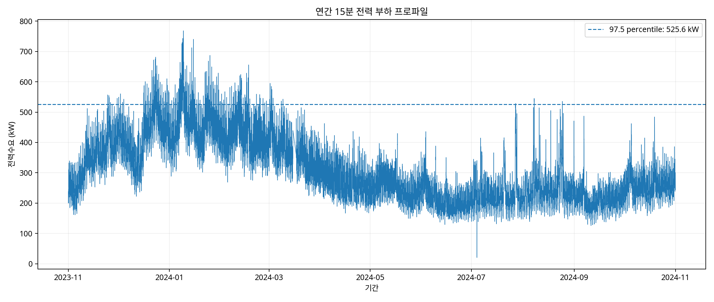
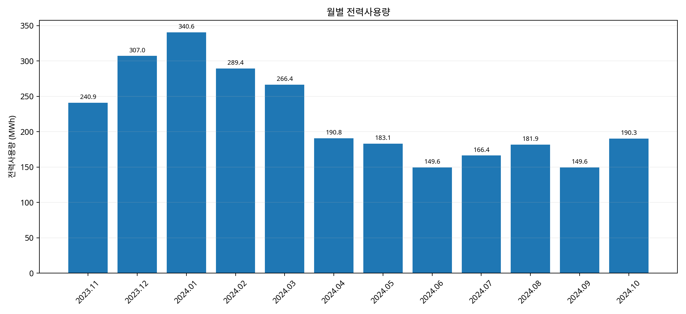
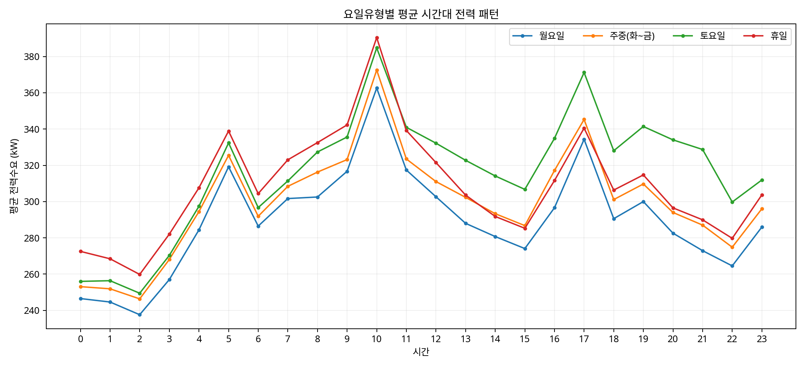
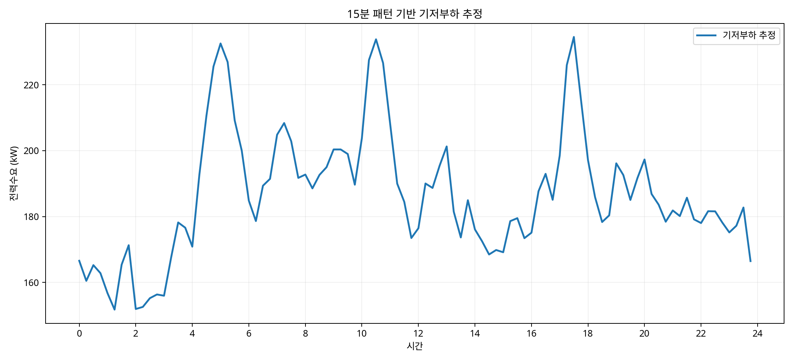
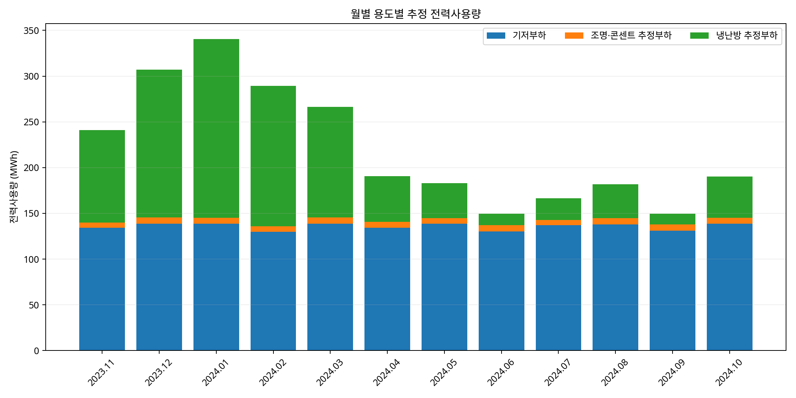
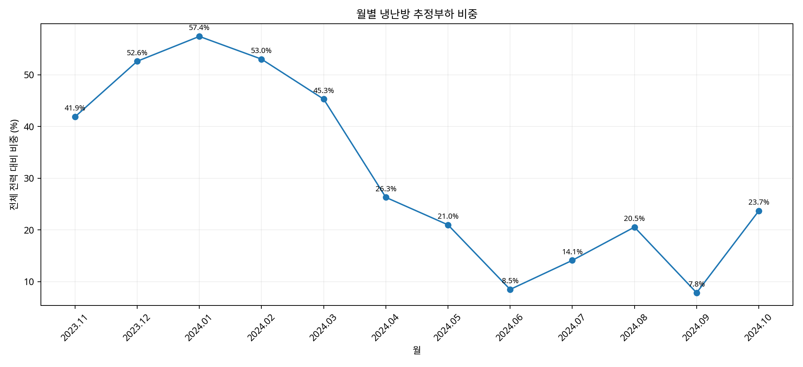

업무가 끝난 뒤에도 유지되는 전력부하가 필수부하인지 불필요한 상시운전인지 확인합니다.
ACTUAL DATA CASE · 12 MONTHS · 35,136 POINTS
15분 전력데이터로 찾아낸
건물의 시간대별 에너지 소비구조
2023.11~2024.10, 1년간 실제 계측한 35,136개의 15분 전력데이터를 월별·요일별·시간대별로 재구성하고, 기저부하와 냉난방 추정부하를 분리하여 심야·휴일·동절기 운전과 Peak 관리의 개선 우선순위를 찾았습니다.
ACTUAL METERED DATA시뮬레이션이 아닌 실제 계측 데이터건물 전체 전력계에서 수집된 실측 시계열을 분석했습니다.
LONG-TERM365일 연속 분석2023.11.01 ~ 2024.10.31
HIGH RESOLUTION15분 × 35,136개일별 96-point Load Profile
ANALYSIS DATA35,13615분 데이터 포인트
ANNUAL ENERGY2,655.8 MWh실제 계측값 적산
AVERAGE DEMAND302.3 kW연간 평균전력
MAX DEMAND768.2 kW2024-01-09 10:30
P97.5525.6 kWPeak 관리기준 후보
01 · PROBLEM총사용량보다 중요한 것은
총사용량보다 중요한 것은
언제, 왜 사용하는가입니다.
월간 전력요금만으로는 심야 상시부하, 휴일 운전, 냉난방 기동·정지시간과 Peak 발생 원인을 구분하기 어렵습니다.
월별 부하곡선의 변화를 통해 냉난방 영향이 집중되는 계절과 시간대를 찾습니다.
연간 최대수요와 상위 부하구간을 분리해 수요관리 대상 시간대를 확인합니다.
02 · METHOD
35,136개 데이터를 6단계로 재구성했습니다.
STEP 01Data QA15분 데이터 정합성 확인
STEP 0296-point/day일별 부하곡선 생성
STEP 03Day Type월·주중·토·휴일 분류
STEP 04Load Profile시간대별 대표패턴 분석
STEP 05SegregationBase·Light·HVAC 추정
STEP 06Opportunity운전개선 우선순위 도출
03 · ACTUAL DATA
실제 1년 데이터에서 보이는 부하 패턴
아래 그래프는 업로드된 실제 건물 전력데이터를 사용해 산출했습니다.

연중 부하변동과 최대수요 발생구간을 동시에 확인합니다.
DATA INSIGHT · 최대전력은 768.2kW, 연간 97.5 percentile은 525.6kW로 분석되었습니다. 상위 부하시간의 주요 설비를 확인하면 Peak 제어기준을 구체화할 수 있습니다.

계절별 총사용량을 비교하면 동절기의 높은 전력소비가 뚜렷하게 나타납니다.
DATA INSIGHT · 2024년 1월 약 340.6MWh로 분석기간 중 가장 높았고, 6월과 9월은 각각 약 149.6MWh 수준으로 낮았습니다.

월요일, 주중, 토요일, 휴일을 분리하여 업무일과 비업무일의 부하 차이를 확인합니다.
DATA INSIGHT · 주중 00~05시 평균부하는 약 273kW, 09~17시는 약 319kW로 심야부하가 주간 업무시간 대비 높은 수준입니다. 단, 실제 24시간 운영시설인지 확인한 뒤 낭비 여부를 판단해야 합니다.

요일유형별 대표 저부하 패턴에서 공통적으로 유지되는 부하를 기저부하 후보로 분리합니다.

건물 전체 전력을 기저부하, 조명·콘센트 추정부하, 냉난방 추정부하로 재구성했습니다.
ANALYTICS · 연간 추정비중은 기저부하 약 61.3%, 냉난방 약 35.8%, 조명·콘센트 약 2.9%입니다. 이는 서브미터 실측값이 아니라 패턴 기반 추정치입니다.

냉난방 영향이 어느 계절에 집중되는지 월별 비중으로 비교합니다.
DATA INSIGHT · 냉난방 추정부하 비중은 1월 57.4%, 12월 52.6%, 2월 53.0%로 높고 6월 8.5%, 9월 7.8%로 낮아 동절기 운전 최적화가 우선 검토대상으로 나타났습니다.
04 · OPPORTUNITY
분석결과를 운전개선 과제로 연결합니다.
심야 기저부하
24시간 필수부하와 비필수 상시부하를 구분하고 정지 가능한 설비의 운전스케줄을 재설정합니다.
동절기 HVAC
기동·정지시간, 설정온도, 외기조건과 재실시간을 연결해 동절기 냉난방 운전을 최적화합니다.
Peak 관리
525.6kW 이상 상위 부하시간을 중심으로 주요 설비를 확인하고 순차기동·수요제어 기준을 수립합니다.
우리 건물의 15분 전력데이터에도 같은 분석을 적용할 수 있습니다.
전력데이터에서 개선 우선순위를 찾고, 실행 후에는 Baseline과 M&V로 절감효과를 검증합니다.